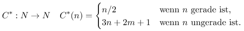

Nachdem ich kürzlich bereits über meinen Zeitvertreib mit der Collatz-Vermutung berichtet habe folgen hier nun einige Details meiner Implementierung
Ich änderte die Formulierung des Problems ja ein wenig ab, indem ich einen weiteren Summenterm einführte, der beim Setzen des Parameters m=0 wieder die ursprüngliche Collatz-Vermutung ergibt:

:{N}\to{N}\quad C^*(n)=\begin{cases}n/2 & \text{wenn }n\text{ gerade ist,}\\3n+2m+1 & \text{wenn }n\text{ ungerade ist.}\end{cases} " title="C^:{N}\to{N}\quad C^*(n)=\begin{cases}n/2 & \text{wenn }n\text{ gerade ist,}\\3n+2m+1 & \text{wenn }n\text{ ungerade ist.}\end{cases} ">Ich wollte dann für verschiedene Werte von m herausbekommen, ob sich diese Familie von Abbildungen genauso verhält wie die originale Collatz-Vermutung. Ich stellte überraschend schnell fest, dass die Abbildung für viele Parameterwerte von m bereits bei niedrigen n Gegenbeispiele produziert und damit die Vermutumg für diese Parameterwerte widerlegt werden kann. Die einzigen Werte für m, für die ich bei der Berechnung mit Startwerten von n<10000000 (wie für die originale Collatz-Vermutung) keine Gegenbeispiele finden konnte waren 0,1,4 und 13.
Ich wollte daher für diese Werte ein wenig weiter rechnen. Dabei machte mir Java - bzw. die eingebauten Datentypen aber einen Strich durch die Rechnung: Ich hatte mir ein Set von Long gebaut, um mir zu merken, welche Werte von n ich bereits besucht hatte - wenn während der Iteration der Abbildung ein n auftauchte, das bereits in der Map anthalten war, konnte ich abbrechen, weil der Pfad deterministisch ist und ab diesem Wert von n bereits untersucht wortden war. Allerdings wurde die Map so groß, dass sie bei 100000000 zu untersuchenden Startwerten nicht mehr in den Arbeitsspeicher passte.
Meine Idee war, die bereits besuchten Zahlenwerte anders zu repräsentieren. Die erste Variante, die ich untersuchte war die eines spärlichen Set: Wenn man sich die Zahlenwerte von 0 bis 1000 und zusätzlich den Wert 1003 in einem normalen Set merken soll, hat das die Größe 1001. Wenn man aber ein Set konstruieren würde, das zusammenhängende Zahlenbereiche als Intervalle speichert, würde man im oben genannten Beispiel nur 2 Elemente benötigen: eines, das das Intervall [1..1000] beschreibt und eines für das Intervall [1003..1003]. Ich erstellte also eine Klasse, die dieses Verhalten implementiert.
Nachdem die funktionale Korrektheit nachgewiesen war analysierte ich die Performance - und war bestürzt: Wo die naive Implementierung mit einem Set eine Laufzeit von 00:00:00.055965 für 10000 zu testende Zahlen benötigte, verbrauchte meine eigene Implementierung 00:00:07.454402. Nachdem ich mich ein wenig mit der Theorie von Collections und der Komplexität von Algorithmen, die damit arbeiten beschäftigt hatte und die Implementierung verbessert hatte konnte ich die Laufzeit auf 00:00:02.681505 drücken.
Anschließend wollte ich wissen, wie gut dies skaliert - die naive Implementierung verbrauchte bei nun 1000000 zu testenden Zahlen 00:00:01.479704, meine Implementierung brauchte so lange, dass ich den Versuch nach mehreren Minuten abbrach. Was war der Grund für dieses schlechte Laufzeitverhalten? Ich werde diese Frage weiter unten auflösen...
Als nächstes überlegte ich mir, BitSet für die Speicherung bereits besuchter Zahlen zu nutzen - so lassen sich in 64 Bit die Informationen zu 64 Zahlen darüber speichern, welche bereits besucht worden ist. Ich konnte die Java-Klasse nicht direkt benutzen, da ein BitSet von der Größe her auf java.lang.Integer.MAX_VALUE beschränkt ist. Daher baute ich mir eine eigene Implementierung, die im Prinzip Integer.MAX_VALUE*Integer.MAX_VALUE Bit verwalten könnte. "Im Prinzip" deswegen, weil die reale Kapazität durch den zur Verfügung stehenden Arbeitsspeicher begrenzt wird.
Mit dieser neuen Variante gab es Licht und Schatten - die Laufzeit der Implementierung sank unter die der naiven Lösung mit Set von vorher 00:00:00.055965 auf 00:00:03.191843 für 10000 zu testende Zahlen. Leider tauchte aber sehr schnell die Meldung java.lang.OutOfMemoryError für eine größere Menge zu testender Zahlen auf. Eine Untersuchung und damit einhergehende Überlegungen zeigten schnell folgende Ursache auf: Die Regel für ungerade Zahlen zweimal aufeinanderfolgend angewendet vergrößert einen Wert von n um eine Größenordnung. Oberhalb von 2 Millionen bedeutet das einen sehr schnellen Anstieg der Größe eines BitSets, das alle Werte dazwischen abdecken soll: für einen Wert von 2 Millionen reicht ein BitSet dieser Größe aus, für eines das alle Werte von 0 bis 20 Millionen abdecken soll, benötigt man schon 10 der maximalen Größe. Bei meinen Berechnungen sah ich aber Werte in der Größenordnung von 672.974.151.236 bei der Untersuchung der ersten 1000000 Startwerte. Das zeigt auch die Ursache der beeindruckend schlechten Performanz der ersten alternativen Implementierung mit Speicherung besetzter Intervalle statt der einzelnen Zahlenwerte: Der Bereich der Werte ist dermaßen spärlich besetzt, dass quasi nur noch einwertige Intervalle ab einem bestimmen Wert existieren, so dass diese Optimierung ab einem gewissen Wert nichts mehr bringt.
Ich entschloss mich daher, die Map zur Speicherung bereits besuchter Werte nur noch bis zu einer Grenze von 60.000.000 Werten zu führen - für jeden Wert über dieser Grenze berechnete ich so lange, bis die maximale Anzahl von Iterationen für den jeweiligen Startwert erreicht - oder eine Iteration einen Wert unterhalb von 60.000.000 ereicht wurde, der bereits einmal besucht wurde. Damit konnte ich den Bereich der Startwerte von 1 bis 100000000 untersuchen und stellte fest, dass die Vermutung für die Parameterwerte 0,1,4 und 13 in diesem Bereich keine Gegenbeispiele lieferte.


Vor 5 Jahren hier im Blog
-
Links zu OSGI und REST
02.12.2016
Ich wollte eigentlich selber eine Anwendung schöpfen, die einen Jetty als Server ausrollt, in den man zur Laufzeit über ein standardisiertes Interface Implementierungen von REST-Services einklinken kann. Gut, dass ich vorher noch ein wenig gelesen habe...
Weiterlesen...
Tags
Android Basteln C und C++ Chaos Datenbanken Docker dWb+ ESP Wifi Garten Geo Git(lab|hub) Go GUI Hardware Java Jupyter Komponenten Links Linux Markup Music Numerik PKI-X.509-CA Python QBrowser Rants Raspi Revisited Security Software-Test sQLshell TeleGrafana Verschiedenes Video Videos Virtualisierung Windows Upcoming...
Neueste Artikel
-
VC2HTML-Plugin
Wie bereits in einem früheren Artikel zum Thema sQLshell-Plugins wird hier wieder ein neues Plugin für die sQLshell vorgestellt, das eine neue Möglichkeit bietet Datenmodelle zu dokumentieren/analysieren.
Weiterlesen... -
JAAS & 2FA
Ich habe an dieser Stelle bereits früher über Möglichkeiten der Nutzung von Einmalpasswörtern entsprechend RFC RFC 6238 in Java-Anwendungen berichtet. Nun wollte ich untersuchen, ob sich 2-Faktor-Authentifizierung in das Framework Java Authentication and Authorization Service (JAAS) integrieren lasen würde.
Weiterlesen... -
Reveal.JS Präsentationen als Gitlab/Github Pages
Ich hatte neulich die Idee, Präsentationen zu erstellen, die als Repository auf Gitlab und/oder Github gehostet werden können und dort auch live als HTML5 für jeden interessierten zu betrachten wären.
Weiterlesen...
Manche nennen es Blog, manche Web-Seite - ich schreibe hier hin und wieder über meine Erlebnisse, Rückschläge und Erleuchtungen bei meinen Hobbies.
Wer daran teilhaben und eventuell sogar davon profitieren möchte, muß damit leben, daß ich hin und wieder kleine Ausflüge in Bereiche mache, die nichts mit IT, Administration oder Softwareentwicklung zu tun haben.
Ich wünsche allen Lesern viel Spaß und hin und wieder einen kleinen AHA!-Effekt...
PS: Meine öffentlichen GitHub-Repositories findet man hier.